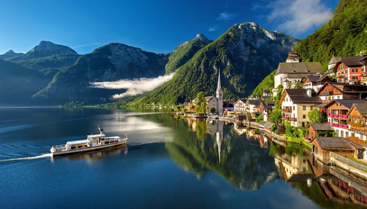

Keliones
Paskutine minute
Ispanija, Kosta Dorada

Paskutines minutes atostogos Ispanijoje, Salou! Skrydis is Vilnius,
bagazas, pervezimai ir 7n. viesbutyje su pusryciai ir vakarienemis -
379€!
Isvykimo laikai
- Vilnius - Barselona 14:00 - 16:30
- Barcelona - Vilnius 17:30 - 22:00
I keliones kaina iskaiciuota:
- Skrydis Vilnius - Barcelona - Vilnius;
- Pervezimas oro uostas - viesbutis - oro uostas;
- 20 kg registruojama ir rankinis bagazas
-
7n. apgyvendinimas pasirinktame viesbutyje su nurodytu maitinimo tipu